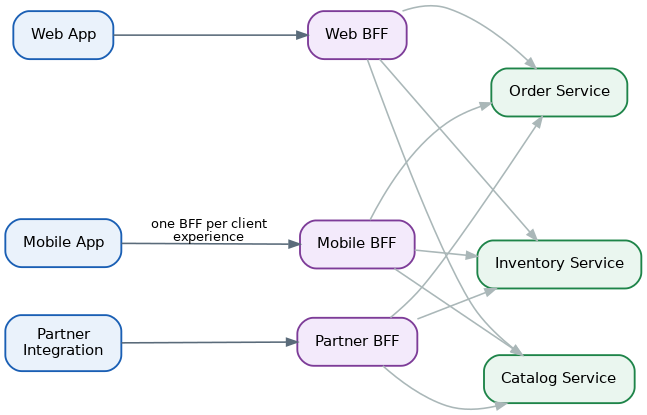
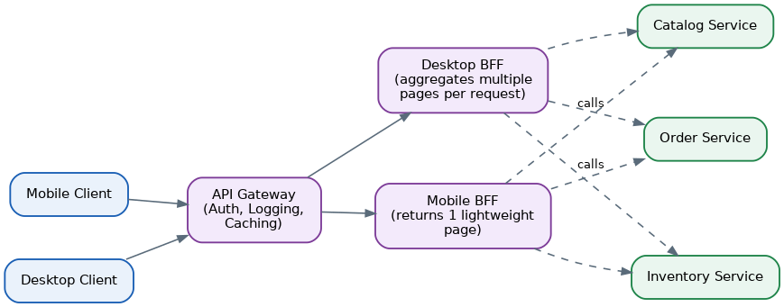

Backends for Frontends (BFF) Pattern
Table of Contents
Overview
Backends for Frontends, usually shortened to BFF, was popularized around 2015 by software consultant Sam Newman, drawing on real practices he observed at companies including SoundCloud and REA Group. The core idea is simple to state: instead of building one general-purpose backend API that tries to serve every kind of client equally well, you build a separate, small backend for each type of "frontend" experience — one tailored for the mobile app, one tailored for the web app, one tailored for outside partner integrations, and so on.
BFF is a close cousin of the API Gateway pattern. Where a single API gateway tries to be one door for every client, a BFF setup gives each different kind of client its own dedicated door, custom-built and custom-maintained for that client's specific needs, while all of those doors still lead into the same shared microservices behind the scenes.
The motivation becomes obvious once you compare a mobile app's needs with a desktop web app's needs. Mobile devices have smaller screens, less reliable and slower networks, and limited battery, so a mobile client wants small, efficient responses tailored to exactly what it will display. A desktop web app on a fast broadband connection with a large screen can happily handle bigger, richer responses spread across several calls. Forcing both to share one generic API almost always means neither one gets a great experience.
The Problem With Traditional Backend Models
When a company first builds a product, it commonly starts with a single web application and a single backend API built specifically to support that web experience — and this works fine at first. Trouble begins once new kinds of clients appear, such as a native mobile app, and the team tries to reuse that same backend for the new client too. Mobile apps typically want fewer, smaller, purpose-built calls, while the existing API was designed around the assumptions of a desktop browser, so the team ends up bolting mobile-specific logic onto an API that was never designed for it.
Over time, this shared backend keeps absorbing more special cases: a bit of logic just for mobile, a bit just for a new partner API, a bit just for a redesigned web experience. The backend becomes bloated with mismatched responsibilities, and because so many different frontend teams depend on it, even a small change requested by one team has to be carefully checked against every other team's needs before it can ship. The shared backend — and often the team that owns it — becomes a bottleneck that slows down releases for everyone.
This is an organizational friction problem as much as a technical one. If the backend is owned by a separate, central team, the team building the mobile or web app can't move at their own pace: every change they need requires coordinating with, and waiting on, that other team's roadmap and release schedule, dragging down their velocity even for changes that are small and specific to their own client.
Consider a retail company: its mobile team wants tiny, efficient payloads for a checkout screen shown over patchy cellular networks; its web team wants a rich, heavily detailed page with many related products and reviews loaded at once; and its partner integrations team needs a stable, versioned API that won't change unexpectedly. One single API trying to please all three groups simultaneously inevitably makes compromises that leave all three only partly satisfied.
The Architecture of the BFF Pattern
The BFF architecture solves this by giving each meaningfully different client its own dedicated backend service. A mobile app talks only to its own Mobile BFF; a desktop web app talks only to its own Web BFF; an external partner talks only to its own Partner BFF. Underneath, all of these separate BFFs still call into the same shared pool of core domain microservices — an Order service, a Catalog service, an Inventory service — so the actual business logic and data are not duplicated, only the client-facing shaping of that data is.
Crucially, each BFF is usually owned by the very same team that builds and owns its matching frontend. This means the mobile team can design, change, and release their Mobile BFF whenever their mobile app needs it to change, without needing sign-off from a separate central backend team — this tight coupling between a frontend team and "its" BFF is exactly what removes the release bottleneck described above.

Sam Newman offers a helpful rule of thumb for deciding how many BFFs to build: "one experience, one BFF." If two client platforms — say iOS and Android — deliver a very similar experience and are built by the same team, sharing one BFF between them can be reasonable. But if the experiences diverge significantly, or separate teams own each platform, giving each one its own BFF avoids one BFF becoming bloated trying to satisfy two different masters, and keeps ownership boundaries clean. This decision is really about mirroring team structure, since a shared component tends to eventually reflect the compromises of everyone who has to touch it.
A natural worry with this approach is duplicated logic: if the Mobile BFF and Web BFF both need to combine data from the same three microservices, isn't that aggregation code written twice? The pattern's answer is that a reasonable amount of duplication across independent services is usually a fair trade for the independence gained, and is often easier to spot and manage than duplicated logic hidden inside multiple different frontend client codebases. If duplication becomes a genuine burden, teams can push the shared aggregation work further down into a core service instead, so multiple BFFs call one smarter downstream service rather than each doing the combining themselves.
An Example: Rendering a Wishlist
A classic illustration of the BFF pattern in action is rendering a customer's wishlist on an e-commerce site. The wishlist itself is only a list of item IDs, stored in a Wishlist service. To show something useful to the customer — each item's name, price, and whether it's currently in stock — the BFF also needs to call a Catalog service for names and prices, and an Inventory service for stock levels.
A simplified flow for this looks like:
1. Client calls the BFF once, asking for "my wishlist"
2. BFF calls the Wishlist service to get the list of item IDs
3. Using those IDs, BFF calls, in parallel:
- Catalog service (names, prices)
- Inventory service (stock levels)
4. BFF combines everything into one response shaped exactly
the way this client wants to display it
5. Client receives one response and renders the wishlistAn important detail is how the BFF handles partial failure. If the Inventory service is slow or down, should the whole request fail? A well-designed BFF will usually degrade gracefully instead — for example, still returning item names and prices while simply omitting the stock-level indicator, rather than showing the user an error for something that's only partly broken. The client also needs to be built to understand and correctly render this kind of partial response.
Performance Implications
Because each BFF is built for one specific kind of client, it can be tuned to that client's real-world network conditions. A Mobile BFF, aware its users are often on slower or less reliable cellular connections, can deliberately keep payloads small, make fewer downstream calls, and lean more heavily on caching. A Web or Desktop BFF, serving clients on fast, stable connections, can afford to aggregate more data per request — for example fetching several pages of results in a single call — for a richer browsing experience.
Just as with a general API gateway, a BFF gets its biggest performance win by calling downstream microservices in parallel wherever those calls don't depend on one another, rather than one after the other. This keeps total response time close to the slowest single downstream call rather than the sum of all of them, though it adds some complexity in coordinating multiple simultaneous calls and combining their results correctly.
Caching strategy can also be tailored per BFF. A Mobile BFF might cache aggressively since mobile users frequently repeat the same requests due to app restarts or spotty connectivity, while a Partner BFF might cache differently based on that partner's expected usage patterns and freshness requirements.
Running several separate BFFs does add operational overhead: each one is its own deployable service needing its own monitoring, scaling policy, and release pipeline. Teams need to weigh this ongoing maintenance cost against the benefit of tailored, independently evolvable client experiences.
Finally, capacity planning for the shared downstream microservices needs to account for the fact that multiple BFFs may all be calling the same backend services simultaneously. If three different BFFs each maintain their own caches and connections to the Catalog service, that service's overall load and connection count is effectively multiplied, and it must be sized and scaled with that in mind.
System Design Examples
Several well-known companies have applied variations of this pattern in production. Netflix built separate backend layers tuned to the very different needs of TVs (which prioritize smooth streaming and simple remote-control navigation), mobile devices (which prioritize offline downloads and efficient data use), and web browsers (which can support richer browsing and social features). SoundCloud, where the BFF term was refined in practice, used dedicated backends so that its mobile listening experience — focused on low data use and offline playback — could evolve independently from its web experience, which handled more complex editing and social features.
A concrete, modern architecture example: a mobile app and a desktop app both send requests to a shared API Management gateway, which centrally handles cross-cutting concerns like verifying the caller's identity token, logging requests for monitoring, and caching repeated responses. From there, the gateway routes mobile traffic to a dedicated Mobile BFF and desktop traffic to a dedicated Desktop BFF, both of which then call into the same set of underlying domain microservices. The Mobile BFF is tuned to return one page of lightweight results at a time to save bandwidth, while the Desktop BFF is tuned to aggregate several pages of richer results into a single call, since the desktop experience can comfortably handle the larger payload.

Walking through the mobile flow step by step: the mobile app sends a request for page one of results, including its access token; the gateway validates the token and logs the request; if this exact request was already served recently, the gateway can return a cached response immediately without bothering the Mobile BFF at all; otherwise, the gateway forwards the request to the Mobile BFF, which calls the necessary microservices and returns a small, single-page response optimized for the mobile screen and network. The desktop flow looks similar at the gateway level, but the Desktop BFF instead gathers multiple pages of data from the microservices in one go, building a heavier, more complete response suited to the desktop experience.
Key Insights and Implications
BFF trades a small, usually manageable amount of duplicated aggregation logic for genuine team independence and client-tuned performance. It works best when there truly are distinct client experiences with different owners and different constraints (network, screen, release cadence); if all clients are similar and owned by one team, a single API — or a shared API gateway without separate BFFs — may be simpler and sufficient. As with the API Gateway pattern, running several BFFs also means several pieces of production infrastructure to keep highly available, so the operational cost of "one more service per client" has to be weighed against the independence it buys.